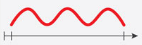
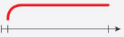

Moje Bezpieczeństwo
Moje BezpieczeństwoAlarm dźwiękowy
| Ogłoszenie Alarmu: | Odwołanie Alarmu: |
|||||||
|---|---|---|---|---|---|---|---|---|
| Modulowany dźwięk syreny w okresie trzech minut. | Ciągły dźwięk syreny w okresie trzech minut. |
|||||||
|  |  |
|||||||
©2021-2022 Moje Bezpieczeństwo. Twórca Maciej Kornaga. Wszelkie prawa zastrzeżone!
W razie jakich kolwiek błędów kontaktować się z twórcą.
W razie jakich kolwiek błędów kontaktować się z twórcą.